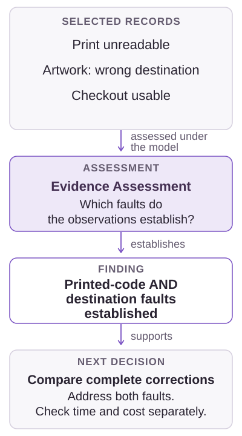
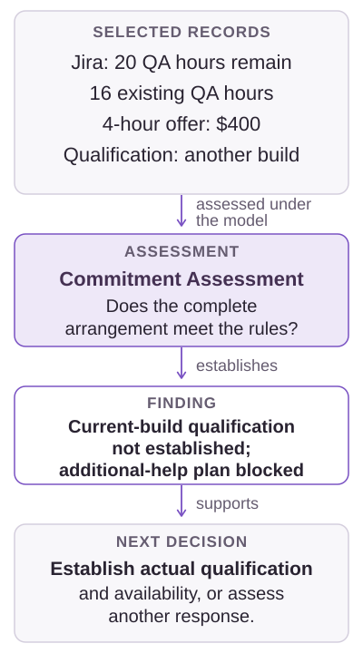

A failed scan makes a reprint look urgent. A release at risk makes extra testing hours look necessary. Both reactions can spend money before the team establishes what actually needs correcting. We call the recurring decision approach Diagnose Before Correcting: establish the supported problem, then compare responses that address it.
Separate a symptom from the required correction.
The signature is an unwanted observation with several possible explanations or blocking conditions. Different explanations imply different remedies. A plausible story can therefore lead to an incomplete correction, unnecessary expense or a repeated failure.
Differential diagnosis offers a familiar comparison: clinicians consider several possible explanations for observed findings and refine them as evidence becomes available. Leah faces a comparable question in the gift-kit case. Printing, destination and checkout faults can occur separately or together within the declared model. Ordering an affordable reprint cannot establish which faults are present.
The key dependency is between the judgment about the problem and the action it justifies. Specify the question the evidence needs to answer. “Something failed” may justify pausing a handoff while remaining too vague to choose what to buy.
Establish the problem before selecting a remedy.
Retain the observations and their scope. Examine the relevant explanations or failed requirements using a method suited to that question. Carry the established finding, including unresolved alternatives, into the correction comparison. Then assess complete responses against the actual obligations.
A formal Evidence Assessment has a specific meaning: it examines whether an admissible interpretation of fixed evidence exists and whether admissible interpretations agree on the required answer. Some diagnostic tasks instead need a direct document match or a failed-requirement explanation. The broad decision approach does not make those methods interchangeable.
An assessment can establish the answer needed for a correction without identifying one complete explanation of everything. Several admissible interpretations may remain while agreeing on that answer. Logical compatibility alone assigns no probabilities to those interpretations.
Recognize the question before choosing the method.
In Leah's gift-kit diagnosis, 120 usable kits are due after a one-day preparation window. A $100 reprint looks affordable, but the supplied observations establish both a printed-code fault and a wrong-destination fault under the declared model. Fixing the print alone leaves the destination problem.
The implemented evidence assessment establishes the correction's required scope. A separate commitment comparison then checks complete packages against cost, resources and timing. Diagnosing two faults does not establish that any particular package can repair them in time.
In Nina's release recovery, twenty QA hours remain and the existing qualified allocation provides sixteen. A $400 offer for four more hours looks like a remedy, but a qualification record for another build cannot establish that this help can perform the assignment. Nina needs qualification for the actual build and environment, plus availability covering the full assignment without conflicting bookings.
Her retained Jira export preserves a ticket marked “Done” with eight QA hours remaining. That status alone establishes neither completed testing nor customer acceptance. Nina needs the team to clarify what it covers.
Follow each relationship map from the supplied records to its finding and next decision. The arrows show support and requirements, not elapsed time.
Gift kits
What needs correcting?


Jira release
Can this help do the work?


The release workflow uses a Commitment Assessment to check complete arrangements and identify unmet requirements. Gifting uses Evidence Assessment to interpret observations. Both support the broader decision approach, while answering different questions. The release comparison does not diagnose software-defect causes.
Maya's shipment exceptions show another variation: a confirmation covering only the previous order revision cannot satisfy the revised order's confirmation requirement.
A known defect need not be diagnosed again.
If a current, authoritative record already establishes the precise defect and required correction, the immediate question may be which response can meet the deadline. Repeating a broad investigation could consume useful recovery time. Conversely, buying an investigation because uncertainty exists requires another question: could its findings change the action enough to justify its cost and delay?
Diagnosis is bounded and correction needs verification.
A diagnosis depends on the admitted explanations, observation meanings and source quality. Unlisted faults remain outside the gift-kit model. A confirmation's matching revision does not authenticate its issuer. A supported diagnosis also supplies no evidence that corrective work has happened.
After correction, require appropriate current records of the outcome. An old successful checkout does not establish that newly corrected kits passed a fresh rehearsal.
Follow the question into the next decision.
Use Make a Bounded Commitment to compare complete corrective responses. Nina's overall release story follows Repair a Disrupted Commitment: diagnosing an obstacle supports the larger task of recovering an existing promise. Use Investigate Before Acting when obtaining additional information is itself a proposed expense. These names describe connected decision approaches, not mandatory steps every problem must pass through.